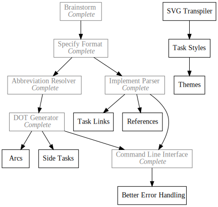

Pando
Todo Tree Renderer
2019-02-10
https://github.com/Kethku/Pando

What
Pando is a tool for rendering interdependent todo tasks into SVG images for embedding in my blog. I use it to transform my unstructured personal projects into intentional explorations of a problem space. Its a talent tree for programming!
Why
Frequently when working on personal projects I have found that there is a strong connection to a tech tree in video games (this is probably why I find working on them so addicting). So I decided to lean into it and have found much benefit in working with my projects in this way.
To enable my addiction, I designed a simple format for writing todo trees as well as a transpiler which converts said format to a graph specification in the DOT language. Finally I wrote a command line tool which ties these pieces into a simple renderer which uses GraphViz to draw the image to a file such as the one above representing the tasks for Pando. It was generated by running Pando on:
x Brainstorm
x Specify Format [ B ]
x Abbreviation Resolver [ SF ]
x DOT Generator [ AR ]
x Implement Parser [ SF ]
x Command Line Interface [ IP, DG ]
- Arcs [ DG ]
- Task Links [ IP ]
- Side Tasks [ DG ]
- References [ IP ]
- SVG Transpiler
- Task Styles [ SvTr ]
- Themes [ TS ]
- Better Error Handling [ CLI ]
How
The todo file format has three parts for each task: a bullet indicating task status, a task name, and a dependency list.
Bullet
Each task can be either waiting, in progress, or complete. This is indicated by -, >, and x respectively before the line.
Task Identifier
The task name can be any words, but no symbols at the moment.
Dependencies
The dependencies are defined in a square bracketed, comma delimited list of
cammel case abbreviations. For example, DOT Generator can be refered to with
any of DG, DoG, DotGenerator. Take care that camel case is used; notice
how the O and T are lower cased in the abbreviation. Tasks without any
dependencies may ommit the empty list.
These three components are combined into a task definition. Many task definitions in a file produce a graph.
Pando must be built using a recent copy of Rust in order to use it. Also
GraphViz must be installed in the path in order for Pando to be able to render
anything out. I build by running cargo build --release and then copy the
pando.exe from \target\release to a known location on the path.
Rendering the graph is accomplished by running pando on the graph file, which
will produce an svg drawing of the graph and output it to a file with the same
name as the input file but a with .svg extension. Optionally a -d {path}
argument can be passed to write out the intermediate DOT format description of
the graph, and -o {path} can be passed to specify the finaly output svg.
Dev Log
Pando is a part of my push to make tangible and documented progress on a project every day.
Day4 - Pando
Day5 - Pando Parser
Day6 - Pando Parser Completed
Day8 - Pando Abbreviations
Day9 - Pando Generator
Day10 - Pando Command Line Interface
Day22 - Pando VNext
Day53 - Pando in the Browser
Day54 - Remove Pando Abbreviations
Day55 - Pando UI